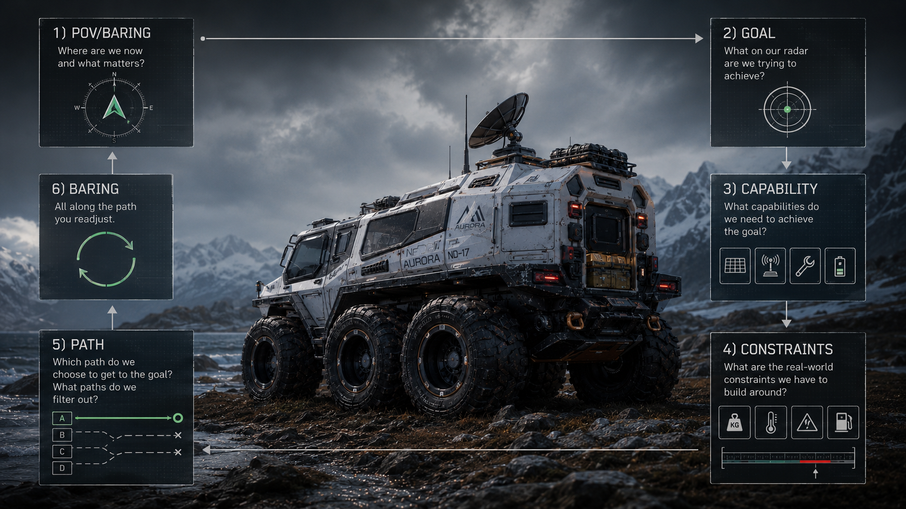
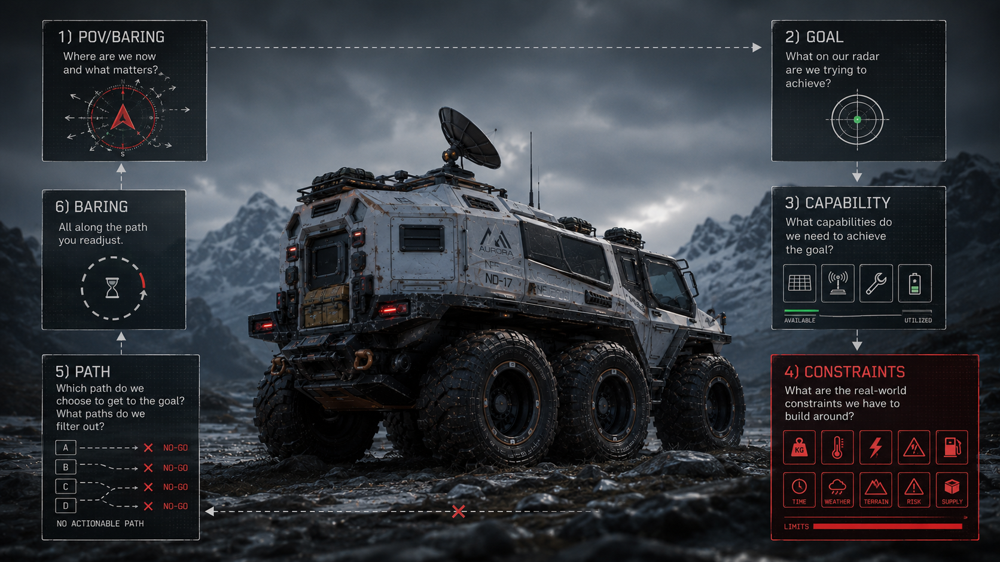

Definition
Path quality comes from capability and constraints first, then action selection, then continuous readjustment.
Campaign Publish · T3
A doctrine artifact for planning literacy: goals define direction, capability and constraints determine viable path, and baring keeps execution in reality contact.


Path quality comes from capability and constraints first, then action selection, then continuous readjustment.
Origin line: "sikta mot stjarnorna, men bygg fran marken."
Interpretation used in this campaign: start at the highest leverage architectural layer (what would actually solve the problem), then work downward to what can be built now under real constraints.
This is not demand for the impossible. It is capability-first planning that filters noise and prevents grandiosity theater.
POV/BARING -> GOAL -> CAPABILITY -> CONSTRAINTS -> PATH -> BARING loop. PATH is an action-plan architecture, not geographic routing.
Status: Limited publish, iteration can be refined.
Framing: Vehicle dossier aesthetics are used as a systems-thinking metaphor. This is doctrine communication, not operational instruction.